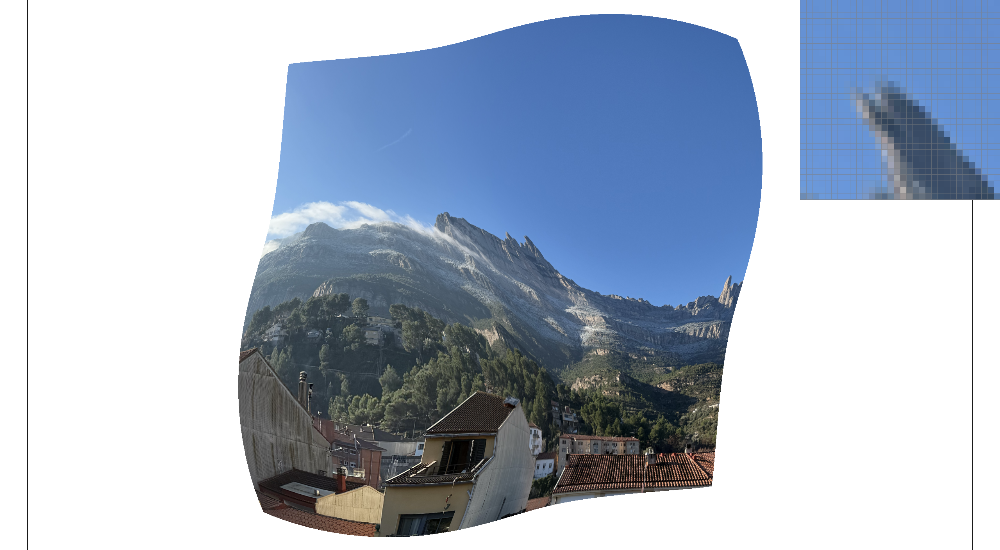

CS184/284A Spring 2025 Homework 1 Write-Up
Names: Ethan Lau
Link to webpage: https://cal-cs184-student.github.io/hw-webpages-Elau2/hw1/index.html
Link to GitHub repository: https://github.com/cal-cs184-student/hw1-rasterizer-elau
Overview
This assignment involved the manual implementation of rasterization, transforms, sampling, mipmapping, etc. and gives a good foundational overview of traditional graphics concepts.Task 1: Drawing Single-Color Triangles
To rasterize a triangle, I first compute a bounding box by taking the floor of the minimum and ceiling of the maximum x and y coordinates across all three vertices, then clamp to the screen dimensions. I then iterate over every pixel within that bounding box and test whether the pixel center (i + 0.5, j + 0.5) lies inside the triangle using the edge function (line test). The edge function for a directed edge from (x0, y0) to (x1, y1) evaluated at point (x, y) is: \[ L(x, y) = -(x - x_0) \cdot (y_1 - y_0) + (y - y_0) \cdot (x_1 - x_0)\] A point is inside the triangle if all three edge function values are non-negative (CCW winding) or all non-positive (CW winding). Checking both cases handles triangles regardless of vertex ordering.Task 2: Antialiasing by Supersampling
Supersampling works by testing multiple sample points per pixel and averaging their results. For a sample rate of N, each pixel is subdivided into a \(\sqrt{N} \) by \(\sqrt{N} \) grid of subsamples. The sample_buffer is a vector of size width × height × sample_rate. In rasterize_triangle, instead of testing one point per pixel, I loop over all subsamples. The center of subsample (sx, sy) within pixel (i, j) is at screen coordinate (i + (sx + 0.5) / sqrt_sr, j + (sy + 0.5) / sqrt_sr). Each subsample that passes the inside test is written to sample_buffer. At the end of the frame, resolve_to_framebuffer averages all subsamples per pixel and writes the result as an RGB to the display framebuffer. Shown below are images sampled at a rate of 1, 4, and 16 respectively.Task 3: Transforms
I modified robot.svg to make cubeman wave with his right arm raised above his head. This was done through a combination of translations, rotations, and scaling transforms.
Task 4: Barycentric coordinates
Barycentric coordinates express any point inside a triangle as a weighted combination of its three vertices. For a point P and triangle with vertices A, B, C, the barycentric coordinates (alpha, beta, lambda) satisfy: \[ P = \alpha \cdot A + \beta \cdot B + \lambda \cdot C \], where \[\alpha + \beta + \lambda = 1 \] Each weight is proportional to the area of the sub-triangle formed by P and the opposite edge. Points outside the triangle have at least one negative coordinate. This makes barycentric coordinates ideal for interpolating any per-vertex attribute across a triangle color, texture coordinates, normals because the weights vary smoothly and sum to 1 everywhere inside.Task 5: "Pixel sampling" for texture mapping
Pixel sampling determines how to read a color from a texture given a continuous UV coordinate. Because UV coordinates rarely land exactly on a texel center, we must decide how to convert a floating-point UV into one or more discrete texel lookups. Nearest neighbor sampling rounds the UV to the nearest texel and returns that texel's color. It is fast but produces a blocky appearance when the texture is magnified, since many adjacent UV coordinates map to the same texel. Bilinear sampling finds the four texels surrounding the UV coordinate and returns a weighted average based on the fractional distance in each direction (two linear interpolations in x, then one in y, hence "bilinear"). This produces smoother results when magnified, at the cost of four texel lookups and some blending arithmetic.Task 6: "Level Sampling" with mipmaps for texture mapping
Level sampling addresses aliasing when a texture is minified (a large texture displayed at small screen size). Many texels map to each screen pixel, and sampling a single texel (as in Task 5) misses most of them, causing aliasing effects. A mipmap pre-filters the texture at progressively halved resolutions. Level 0 is the full-resolution image; level k is 1/2^k the resolution in each dimension. Given how much texture space a screen pixel footprint covers, we select the mipmap level where one texel is approximately one screen pixel, reducing aliasing. In rasterize_textured_triangle, I compute barycentric coordinates not only for (x, y) but also for the neighboring points (x+1, y) and (x, y+1). These give UV coordinates p_uv, p_dx_uv, p_dy_uv that are stored in SampleParams. In Texture::get_level, the difference vectors p_dx_uv - p_uv and p_dy_uv - p_uv are scaled by the full texture dimensions to get texel-space footprint vectors. The mip level is log2(max(|du|, |dv|)) where the lengths are taken in texel space. Texture::sample then dispatches based on lsm:|
|
|
|
|

|